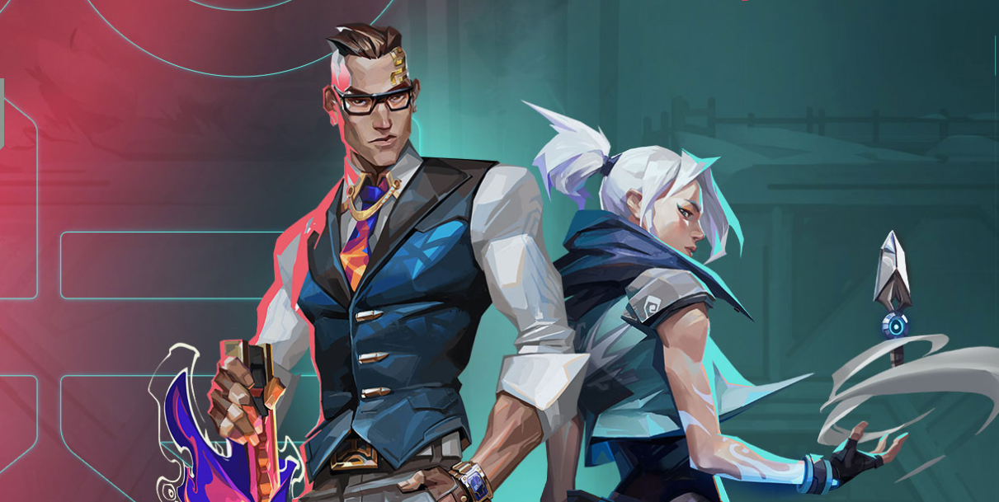

Noticias
Valorant
ACTUALIZACIONES DE CUESTIONES SOCIALES
Esperamos poder aprovechar las listas que tanto tu como otros jugadores crean y, comparandolas con las de otras regiones, podamos reducir el nivel de toxicidad en el chat, asi como usar la informacion que recabamos para mejorar nuestro propio sistema de deteccion. Desde ya, agradecemos a quienes puedan darnos una mano. ¡Hagamos de VALORANT un lugar mejor para toda la comunidad!
ACTUALIZACIONES DE ARMAS
ARES
La version 4.0 trajo consigo cambios a la Ares que aumentaron considerablemente su poder, y nos alegra ver que se utiliza mas en el juego. Sin embargo, dichos reajustes la hicieron un arma mas facil de maniobrar y la falta de cabeceo le quito parte del encanto que la hacia especial. Nos alegra ver que los ajustes efectuados a la velocidad de disparo hayan mejorado la experiencia de uso con la Ares, asi que no haremos mas cambios en ese aspecto. Sin embargo, los ajustes que aparecen a continuacion deberian dificultar el control del arma y recuperar su antiguo caracter al incluir una precision inversa mas prominente.
Aumentamos su precio de 1550 >>> 1600.
Aumentamos su curva de retroceso.
Cambiamos la propagacion de 0.8 >>> 0.7 (tras disparar 10 balas) a 1.0 >>> 0.7 (tras disparar 13 balas).
Redujimos el beneficio de agacharse en propagacion y retroceso del 40% >>> 25%.
MELEE
Es un tanto complicado apuntar con las armas melee, lo que las hace poco confiables. Así que actualizamos los ataques melee con el clic izquierdo y el derecho para que sean más confiables a la hora de matar agentes.
Las áreas de detección al atacar con clic derecho ahora son 1.5 veces más grandes. Las áreas de detección al atacar con clic izquierdo ahora son más grandes que las del clic derecho y también tienen un alcance un poco mayor.
Los objetivos que estén más cerca del centro de los ataques con cuchillo recibirán el impacto primero, así que el arma melee aún tendrá precisión.
Extra: Acuchillar paredes ahora tiene una reacción inmediata al hacer un tajo en una pared (lo cual se predice del lado del cliente).